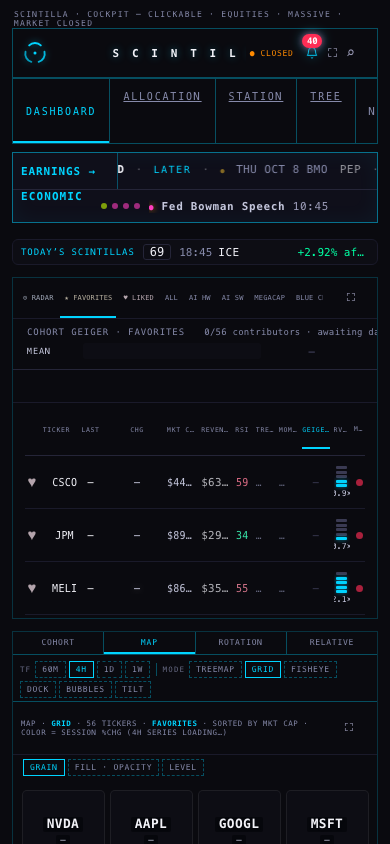
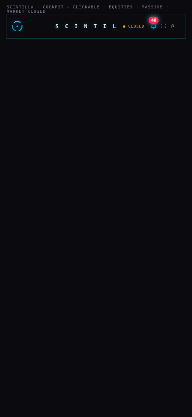
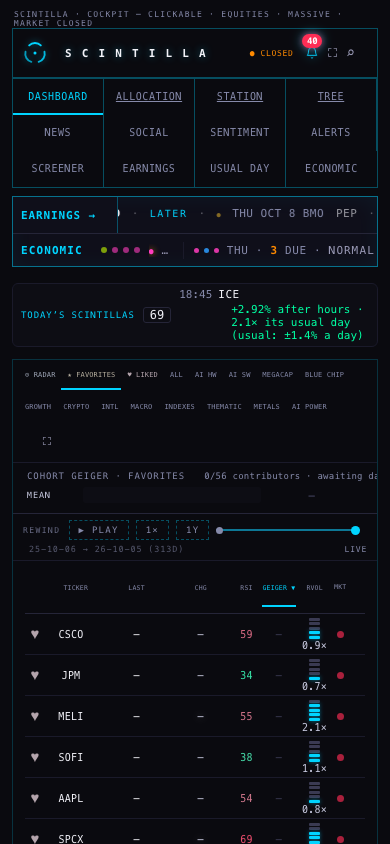
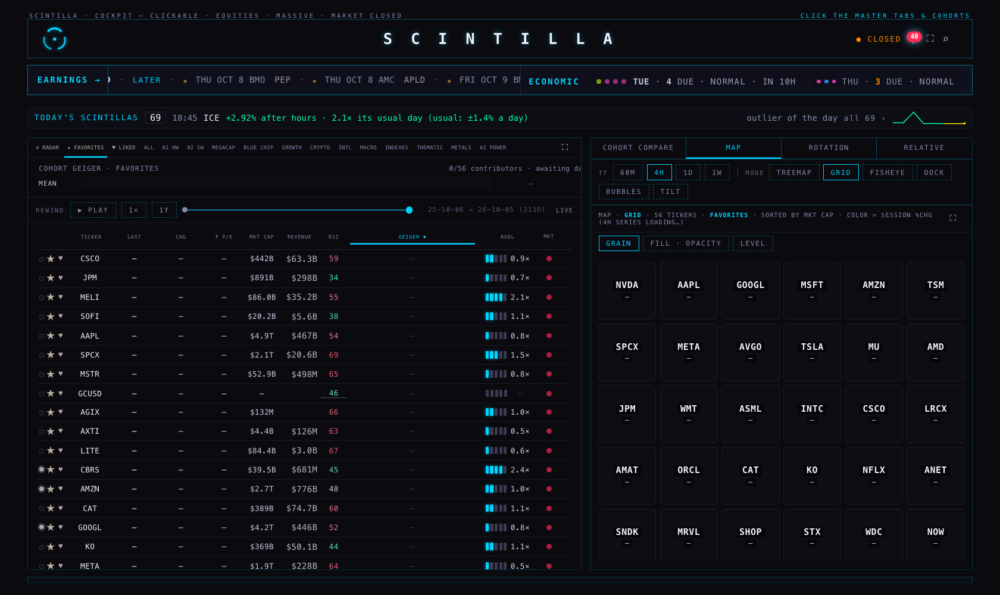

The outside critique's findings, fixed worst first
The board on a phone, while it loads




The prices read "—" in every picture: the chart API only answers scintillahub.ai, and these were taken from a copy on this Mac. That is the same in the before and the after.
The board, measured
What the 5.4 MB was. The page is 2.2 MB, and it downloaded itself a second time — on every load, and again every 75 seconds while open — to read one line near its end that says which build it is. On the live site that is 716 KB over the wire each time. It now asks for the first 4 KB, where the same line now also sits. The rest of the weight is the page itself (2.2 MB, everything in one file) and one 272 KB data file; splitting the page is a larger job and is not done here.
What the shift was. The page draws the tabs and the board the moment its main script has run, but the last six blocks of styling — including the phone layout — sit after that script in the file. On a phone or a slow line the browser painted in between, then everything jumped. Two more jumps came a moment later, when the scintilla strip and the tape's economic line arrived with their data. Now the tabs and board are held until the whole file has been read, and the two bands keep their place while their data loads.
Not changed: first paint (11.6 → 11.7 s on Lighthouse's slow phone) and accessibility (92). Performance 50 is still not good: what is left is the size of the one file.
Every finding
| Finding | Fixed? | Test | Measured before → after |
|---|---|---|---|
| PROVIDER · provider/q5-fixes-20261005 | |||
| Two promise chains in the stream with no safe end | Yes. Each had a catch, but the catch itself could throw on a failure that is not an Error: an unhandled failure at boot, and a session-bars caller left with no answer | q5-detached-promise-chains: rejects both four ways | 3 of 6 fail on old code → 6 of 6 pass |
| Certificate checking off, 9 places | One place decides now. Give it the database's certificate authority and checking is on; without it, as before, and that one line says why. Not switched on by this branch (see decisions) | q5-database-tls: the rule, no second place, a real handshake | 9 places → 1 · scanner 9 → 0 |
| One circular import | Yes. The shared calendar has its own file | q5-no-import-circle: walks every import | 1 → 0 |
| Chart API reaching into the bar service's folder, 17 places | Yes. The 16 shared contract files live in one package both import; every old path still works | q5-service-boundary + the packaging tests | 17 → 0 |
| 7 dead exports | Yes. 4 removed, 3 made private | knip | 7 → 0 |
| 1 unlisted dependency | Not a missing package: it is the edge function's own registry (Deno). Named as such in the tool's settings and in the file | knip | 1 → 0 |
| HUB · hub/q5-fixes-20261005 | |||
| The board's weight, 5.4 MB | Yes, the half that was the page re-downloading itself. Invisible | q5-board-weight (6) | 5,378 → 3,221 KiB |
| The board's layout shift, 0.88 | Yes. Visible only while loading (pictures above) | q5-board-shift (2) | 0.894 → 0.003 |
| 28 places building HTML by joining strings | All 28 read. 23 already escaped everything from data. Escaped now: a timeframe label (twice) and a fiscal date in the layout prototype, plus two interface values. The scanner never read the live page's own script, so that was searched too: two places in USUAL DAY wrote names from a data file unescaped — escaped, invisible | q5-html-escape: hostile text through the real code | 11 places escaped · scanner 28 → 27 |
| openCo undefined in two harnesses | Not a crash: it runs inside the browser, where the page defines it. Made explicit, and answers by name if a page lacks it | q5-html-escape | 2 → 0 |
| STATION · station/q5-fixes-20261005 | |||
| Signal-level items that are real bugs | 335 read, 2 real: a test fixture calling a helper that file never defined (would have crashed the first test to use that route), and a line assigning a value to itself. Fixed | station-admission-v2: walks every route of the fixture | 2 of 2 fixed |
| The other 333 | Not bugs: 303 "not defined" names are the browser's or the extension's (each checked against the Station's pages); the rest are a default before a try, or a two-handler promise. Unreachable code: none found | — | 0 unreachable |
The scanner's Hub count barely moves (28 → 27) because it flags the shape — any HTML built by joining strings — whether or not the values are escaped.
What changes on the Hub page itself
| Change to index.html | Can you see it? |
|---|---|
| The page stops downloading itself to read its build line | No |
| Two names in USUAL DAY are escaped | No |
| The tabs, the board and the bottom bands wait until the whole file has been read | Only while loading: no half-styled board first. On a very slow line the tabs appear a little later than they did (never later than 20 seconds) |
| The scintilla strip keeps its line's height while its rows load | Only while loading: an empty gap where the strip is about to be, instead of the board dropping. On a phone the gap is three lines tall, so a short scintilla still moves the board a little |
| Under 900 px, the tape's economic line keeps its place while the calendar loads | Only while loading. In a quiet week the empty line folds away once the calendar has answered |
What the coordinator deploys, and in what order
- Provider, chart API first, then the bar service; the stream with its next ordinary deploy, outside market hours. No secret, no migration, no schedule. The order, the read-backs and the rollback are in
runbooks/Q5-FIXES.mdon the provider branch. - Station. Tests only — nothing a screen shows. Merge whenever.
- Hub, after you have looked at the pictures above. The two invisible changes and the harness and prototype fixes can go at once; the three loading changes are yours to approve.
The provider and the Hub do not depend on each other; any order between them is safe.
Not done, or not verified
- Certificate checking for the database is ready, not on. Whether the vendor's certificate verifies was not checked from here (no credential on this Mac; a handshake-only check was tried and this Mac's tool could not do it).
- The board was measured on a copy served from this Mac, as in Q3, not on scintillahub.ai. Measured on the live site: the page's size (2,219,198 bytes; 715,888 on the wire) and that it answers a 4 KB request with exactly 4 KB.
- The page is still one 2.2 MB file. Splitting it is the remaining weight, and a larger piece of work.
- Left as found: 290 type-checker gaps, 9 lower-severity cross-service imports in the provider, 5 orphan scripts, and the style-level lint items in all three repos.
- The Station's main code sits inside its HTML pages, which the linter does not read. So "2 real bugs" is 2 in the files it does read.
- If Q3's provider branch is merged with this one, three files conflict; the resolutions are written in the runbook.
Decisions for you
- The three loading changes on the board. Recommendation: approve. The finished page is unchanged; what goes is the half-styled first frame.
- Switch certificate checking on for the database. Recommendation: yes, as its own step, proved on a throw-away machine first — a wrong certificate stops the stream writing.
- Split the 2.2 MB page. Recommendation: schedule it as its own job; it is what stands between performance 50 and a good score.
PAGE SPECS
Branches: provider/q5-fixes-20261005 (off provider/p12-bar-clock-20261005 @6a7fce5), hub/q5-fixes-20261005 (off hub/release-20260923 @0761d98), station/q5-fixes-20261005 (off station/merge-20260923 @5c77c83). Numbers beside this page: q5-findings.json.
Lighthouse 12.6.1, its default phone profile, headless Chromium, three runs before and three after, interleaved, on one local static server that answers byte ranges as the live host does. Layout shift was also measured with a separate headless probe on a 1.6 Mbps line and on a four-times-slower processor: phone 0.88 → 0.003 and 0.81 → 0.001, desk 0.06 → 0.
The two "while it loads" pictures are the page cut where its main script ends — what the browser holds at the moment it used to paint. The four finished pictures are the whole page after nine seconds. Every test browser ran headless and every request that was not a read was blocked (one per page load).
Tools: ESLint 9, knip 5, dependency-cruiser, semgrep 1.179.0 (p/javascript + p/nodejs), with Q3's settings.